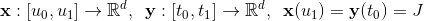
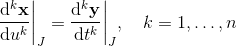
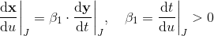
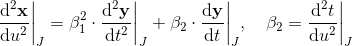
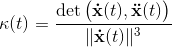
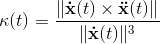

0 2
neprekidnost
Parametarska i geometrijska neprekidnost
krivulje

parametarska neprekidnost u točki J
Krivulje x i y su Cn neprekidne u (jednostavnoj) točki J ako vrijedi

geometrijska neprekidnost u točki J
Krivulje x i y su Gn neprekidne u (jednostavnoj) točki J ako su u svojim prirodnim parametrizacijama
Cn neprekidne u točki J.
Ili ekvivalentno, ako postoje regularne Cn reparametrizacije krivulja
x i y u kojima se dobiva Cn neprekidnost u točki J.
Prostorna krivulja je Gn neprekidna ako i samo ako je njezina zakrivljenost klase Cn-2
i torzija klase Cn-3.
G1 neprekidnost u točki J neprekidno mijenjanje tangenata

G2 neprekidnost u točki J

Ravninske G2 krivulje imaju neprekidnu zakrivljenost s predznakom,
a prostorne G2 krivulje imaju
neprekidnu zakrivljenost i neprekidne vektore binormala (neprekidno mijenjanje oskulacijskih ravnina).
Zakrivljenost ravninske krivulje Zakrivljenost prostorne krivulje
